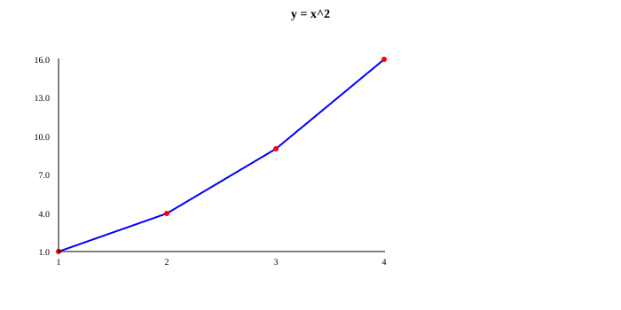
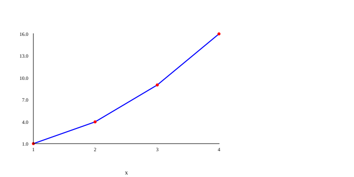
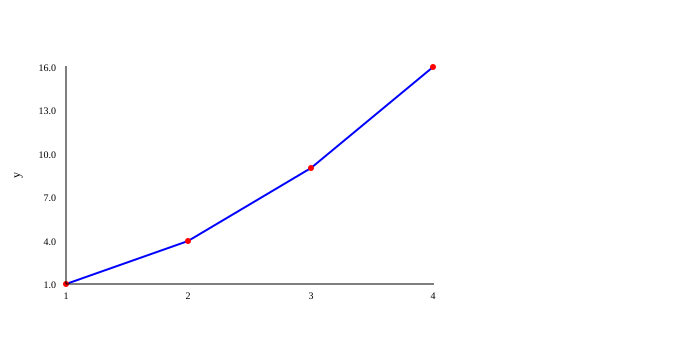
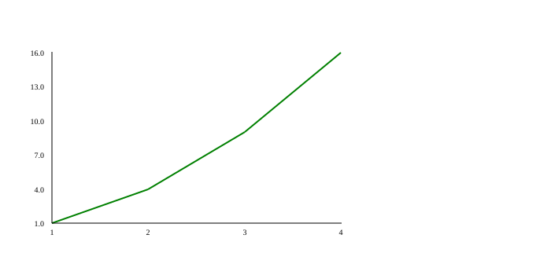
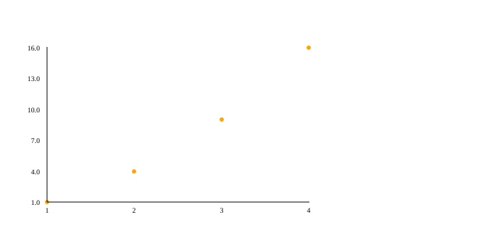
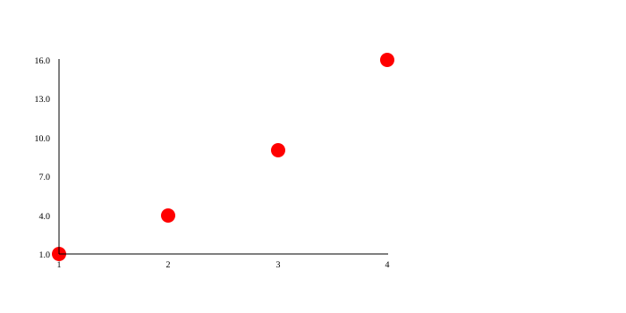
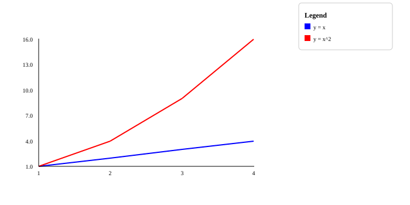

PLOT: titles, axes and colors¶
A chart without names is like a map without signs: you see the shapes, but you don't know what they mean. The functions on this page add signs (a title and axis names), a grid to read values more easily, colors and a legend that explains each line.
They all work the same way: they write down a setting that is used when the chart is drawn. That is why they go after plot.figure() and before plot.render(). If you don't know those two yet, start with Lines and points.
The examples clean up after themselves
The examples end with files.delete(...) so they don't leave pictures in the test folder. Remove those lines in your program to keep the picture.
Signs: title and axes¶
An axis is each of the two rulers of the chart: the x axis is the horizontal one (left to right) and the y axis is the vertical one (bottom to top).
plot.title(text)¶
What it does: Puts a title above the chart, centered and in bold.
When to use it: Whenever someone else will look at your chart: the title says what it is about.
| Parameter | Type | What it means |
|---|---|---|
text |
STR |
The title. |
Returns: VOID (nothing).
Example:
import plot;
import files;
plot.figure();
plot.title("y = x^2");
plot.graph([1, 2, 3, 4], [1, 4, 9, 16]);
plot.render();
-- clean up
files.delete("title.svg");
Result: the file title.svg:

plot.xlabel(text)¶
What it does: Puts a name below the x axis (the horizontal one).
When to use it: To say what is measured from left to right, for example "days".
| Parameter | Type | What it means |
|---|---|---|
text |
STR |
The name of the x axis. |
Returns: VOID (nothing).
Example:
import plot;
import files;
plot.figure();
plot.xlabel("x");
plot.graph([1, 2, 3, 4], [1, 4, 9, 16]);
plot.render();
-- clean up
files.delete("xlabel.svg");
Result: the file xlabel.svg:

plot.ylabel(text)¶
What it does: Puts a name next to the y axis (the vertical one), turned to read from bottom to top.
When to use it: To say what is measured upwards, for example "height (cm)".
| Parameter | Type | What it means |
|---|---|---|
text |
STR |
The name of the y axis. |
Returns: VOID (nothing).
Example:
import plot;
import files;
plot.figure();
plot.ylabel("y");
plot.graph([1, 2, 3, 4], [1, 4, 9, 16]);
plot.render();
-- clean up
files.delete("ylabel.svg");
Result: the file ylabel.svg:

plot.grid(on)¶
What it does: Turns on (True) or off (False) a grid: soft gray lines, like the ones in a math notebook, that help you read the values.
When to use it: When you want to read more precisely how much each point is worth.
| Parameter | Type | What it means |
|---|---|---|
on |
BOOL |
True to show it, False to hide it (that is how it starts). |
Returns: VOID (nothing).
Example:
import plot;
import files;
plot.figure();
plot.grid(True);
plot.graph([1, 2, 3, 4], [1, 4, 9, 16]);
plot.render();
-- clean up
files.delete("grid.svg");
Result: the file grid.svg:
Colors and sizes¶
Colors are written with their English name, in quotes: "red", "blue", "green", "orange", "purple"… Codes like "#ff8800" work too. PLOT copies the text as it is into the SVG file, so any color a web browser understands is valid.
Each series remembers the colors that were set when you called its graph. That way you can change color between one series and the next.
plot.color(name)¶
What it does: Changes the color of the line of the series you add next. It starts as "blue".
When to use it: To tell several lines apart in the same chart.
| Parameter | Type | What it means |
|---|---|---|
name |
STR |
The color's English name or a code like "#ff8800". |
Returns: VOID (nothing).
Example:
import plot;
import files;
plot.figure();
plot.color("green");
plot.graph([1, 2, 3, 4], [1, 4, 9, 16], "line");
plot.render();
-- clean up
files.delete("color.svg");
Result: the file color.svg:

plot.pointColor(name)¶
What it does: Changes the color of the points (the little circles) of the series you add next. It starts as "red".
When to use it: In point charts, or to make the points match their line.
| Parameter | Type | What it means |
|---|---|---|
name |
STR |
The color's English name or a code like "#ff8800". |
Returns: VOID (nothing).
Example:
import plot;
import files;
plot.figure();
plot.pointColor("orange");
plot.graph([1, 2, 3, 4], [1, 4, 9, 16], "point");
plot.render();
-- clean up
files.delete("point-color.svg");
Result: the file point-color.svg:

plot.pointSize(size)¶
What it does: Changes the size of the points. The number is the radius of each little circle, in pixels. It starts as 3.
When to use it: To make the points easier to see when there are few, or smaller when there are many.
| Parameter | Type | What it means |
|---|---|---|
size |
INT |
The radius of each point, in pixels. It must be a whole number. |
Returns: VOID (nothing).
Example:
import plot;
import files;
plot.figure();
plot.pointSize(8);
plot.graph([1, 2, 3, 4], [1, 4, 9, 16], "point");
plot.render();
-- clean up
files.delete("point-size.svg");
Result: the file point-size.svg:

Legend¶
When there are several lines, a legend is the little box that says what each color means, like the one on a map that explains its symbols.
plot.legend(text)¶
What it does: Adds a box titled Legend to the right of the chart. Each row of the legend is written as color: text, and rows are separated with ;.
When to use it: Whenever you draw two or more series in the same chart.
| Parameter | Type | What it means |
|---|---|---|
text |
STR |
The rows, for example "blue: sales; red: costs". |
Returns: VOID (nothing).
Example:
import plot;
import files;
plot.figure();
plot.color("blue");
plot.graph([1, 2, 3, 4], [1, 2, 3, 4], "line");
plot.color("red");
plot.graph([1, 2, 3, 4], [1, 4, 9, 16], "line");
plot.legend("blue: y = x; red: y = x^2");
plot.render();
-- clean up
files.delete("legend.svg");
Result: the file legend.svg:

Watch out
- PLOT doesn't check that the legend colors match the line colors: you decide what to write.
- A row without
:appears as plain text, without a color square. - In a pie (
pie) the legend works differently: seepie.
Summary¶
| Function | What it does |
|---|---|
plot.title(text) |
Title above the chart. |
plot.xlabel(text) |
Name of the horizontal axis. |
plot.ylabel(text) |
Name of the vertical axis. |
plot.grid(on) |
Turns the grid on or off. |
plot.color(name) |
Color of the next lines. |
plot.pointColor(name) |
Color of the next points. |
plot.pointSize(size) |
Size of the next points. |
plot.legend(text) |
Box that explains each color. |
What did you learn?¶
- Style settings go between
figure()andrender(). - Colors are written in English (
"red") or as a code ("#ff8800"). - Each series keeps the colors that were set when you called its
graph.